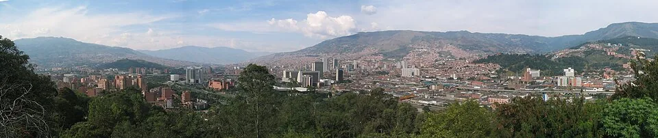
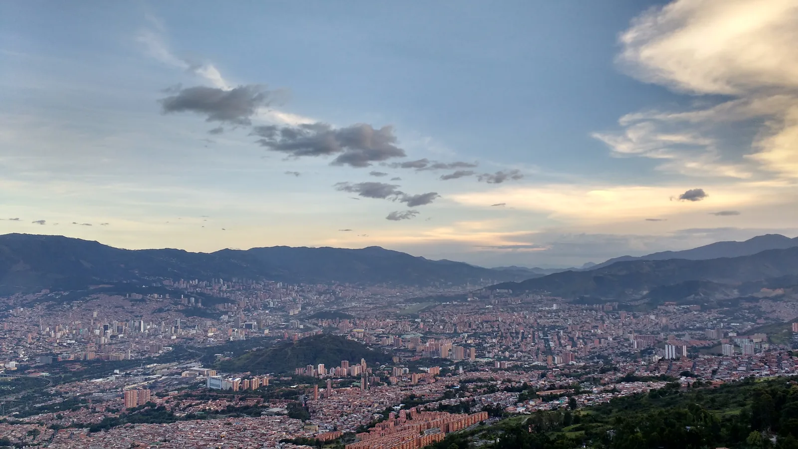
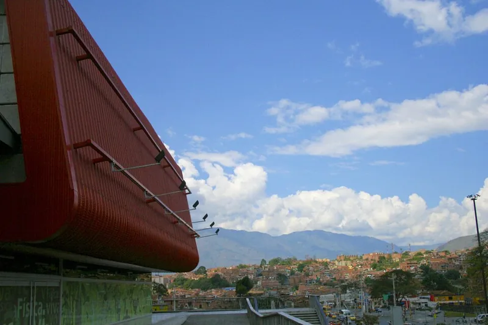

Selección por relevancia y variedad. Fotografías provisionales para revisión privada; sin aprobación ni publicación.
Portada propuesta: Coltejer desde lejos con ciudad

Fabioj (Wikipedia:User:fabioj), según ficha original · Original · CC BY-SA 3.0. Miniatura técnica sin recorte; foto histórica.
Historia: del establecimiento de la Villa a la ciudad actual

Luis90f · Original · CC BY-SA 4.0. Miniatura técnica sin recorte; foto histórica.es
El 2 de noviembre de 1675 se estableció la Villa de Nuestra Señora de la Candelaria de Medellín. Su historia posterior estuvo ligada al comercio y al desarrollo industrial.
La producción de artistas como Débora Arango y Fernando Botero forma parte del patrimonio cultural de la ciudad. Visitar sus museos permite acercarse a miradas diversas sobre la sociedad y su historia.
en
The Villa of Nuestra Señora de la Candelaria de Medellín was established on 2 November 1675. Trade and industrial development shaped its later history.
Artists including Débora Arango and Fernando Botero are part of the city’s cultural heritage. Its museums offer different perspectives on society and history.
pt-BR
Em 2 de novembro de 1675 foi estabelecida a Vila de Nuestra Señora de la Candelaria de Medellín. O comércio e o desenvolvimento industrial marcaram sua história posterior.
Artistas como Débora Arango e Fernando Botero fazem parte do patrimônio cultural da cidade. Seus museus permitem conhecer diferentes olhares sobre a sociedade e a história.
1. Parque Explora

Eseoso · Original · CC BY-SA 3.0. Miniatura técnica sin recorte; foto histórica.
Equipamiento de ciencia/acuario reconocido; diversifica la visita y turismo familiar.
es
Parque Explora acerca la ciencia al visitante mediante espacios interactivos y un acuario. Es una visita para explorar preguntas y dedicar tiempo a las salas, sin reducirla a una parada fotográfica. Consulta la programación y las condiciones de entrada con el operador antes de ir.
en
Parque Explora introduces visitors to science through interactive spaces and an aquarium. Allow time to explore its rooms and questions rather than treating it as a photo stop. Check the programme and entry arrangements directly with the operator.
pt-BR
O Parque Explora aproxima o visitante da ciência por meio de espaços interativos e um aquário. Reserve tempo para explorar as salas e suas perguntas, em vez de fazer apenas uma parada para fotos. Consulte a programação e as condições de entrada diretamente com o operador.
Paco Godoy · Original · CC BY-SA 3.0. Miniatura técnica sin recorte; foto histórica.
Referente turístico de tradición paisa y mirador en Cerro Nutibara; recreación y no pueblo colonial.
es
En la cima del Cerro Nutibara, Pueblito Paisa recrea la arquitectura de un pueblo tradicional antioqueño y ofrece vistas de Medellín. La plaza y sus construcciones forman un conjunto turístico, no un municipio colonial conservado. Confirma las condiciones de acceso al cerro y planea el recorrido según el tiempo y tu movilidad.
en
At the top of Cerro Nutibara, Pueblito Paisa recreates the architecture of a traditional Antioquian town and offers views of Medellín. Its square and buildings form a visitor attraction, rather than a preserved colonial municipality. Check access conditions and plan around the weather and your mobility needs.
pt-BR
No alto do Cerro Nutibara, o Pueblito Paisa recria a arquitetura de um povoado tradicional antioquenho e oferece vistas de Medellín. A praça e suas construções formam um conjunto turístico, não um município colonial preservado. Confirme o acesso e planeje a visita conforme o clima e suas necessidades de mobilidade.
Jorge Láscar · Original · CC BY-SA 3.0. Miniatura técnica sin recorte; foto histórica.
Colecciones vivas, educación ambiental y arquitectura del Orquideorama; naturaleza urbana.
es
El Jardín Botánico Joaquín Antonio Uribe combina colecciones vivas con educación ambiental y programación cultural. El Orquideorama es uno de sus espacios reconocibles y la referencia fotográfica propuesta para esta ficha. Consulta las actividades y condiciones de visita directamente con el Jardín.
en
Jardín Botánico Joaquín Antonio Uribe combines living collections with environmental education and cultural programmes. The Orquideorama is a distinctive space and the proposed photographic reference for this listing. Check activities and visiting arrangements directly with the garden.
pt-BR
O Jardín Botánico Joaquín Antonio Uribe reúne coleções vivas, educação ambiental e programação cultural. O Orquideorama é um espaço marcante e a referência fotográfica proposta para esta ficha. Consulte as atividades e condições de visita diretamente com o jardim.
Alecprofit · Original · CC BY-SA 4.0. Miniatura técnica sin recorte; foto histórica.
Turismo comunitario, arte urbano y memoria social; delimitar ruta, no equiparar la comuna completa al circuito turístico.
es
La Comuna 13 reúne iniciativas comunitarias que relacionan arte urbano, memoria y vida de barrio. El circuito turístico no representa todo San Javier: define el recorrido y considera un operador comunitario con información verificable. Visita con respeto por residentes y relatos; no se garantiza disponibilidad de tours, espectáculos ni condiciones de seguridad.
en
Comuna 13 is home to community initiatives connecting urban art, memory and neighbourhood life. The visitor circuit does not represent all of San Javier: define the route and consider a community operator with verifiable information. Respect residents and their stories; tours, performances and safety conditions are not guaranteed.
pt-BR
A Comuna 13 reúne iniciativas comunitárias que relacionam arte urbana, memória e cotidiano do bairro. O circuito turístico não representa toda San Javier: defina o percurso e considere um operador comunitário com informações verificáveis. Respeite os moradores e seus relatos; passeios, apresentações e condições de segurança não são garantidos.
Bernard Gagnon · Original · CC BY-SA 4.0. Miniatura técnica sin recorte; foto histórica.
Nodo artístico del centro junto a Plaza Botero; ambas relacionadas pero sin duplicar tarjetas del mismo conjunto.
es
El Museo de Antioquia permite acercarse al arte y a historias de la región mediante sus colecciones y exposiciones. Su oferta incluye salas relacionadas con Fernando Botero y Débora Arango. La vecina Plaza Botero complementa la visita al centro, pero las obras exteriores y las salas del museo son espacios diferentes; consulta entradas y programación.
en
Museo de Antioquia offers an introduction to regional art and history through its collections and exhibitions, including rooms associated with Fernando Botero and Débora Arango. Nearby Plaza Botero complements a downtown visit. Outdoor works and museum galleries are separate spaces; check tickets and programmes.
pt-BR
O Museo de Antioquia apresenta arte e histórias da região por meio de coleções e exposições, incluindo salas relacionadas a Fernando Botero e Débora Arango. A vizinha Plaza Botero complementa a visita ao centro. As obras externas e as salas do museu são espaços diferentes; consulte ingressos e programação.
Paco Godoy · Original · CC BY-SA 3.0. Miniatura técnica sin recorte; foto histórica.
Naturaleza y recorridos en Santa Elena; confirmar sendero y jurisdicción, no atribuir todo el parque regional al casco urbano.
es
Parque Arví ofrece una aproximación al paisaje rural de Santa Elena mediante senderos y actividades de naturaleza. La Corporación Parque Arví publica opciones guiadas y autoguiadas y orientación para visitantes. Confirma el recorrido específico y las condiciones de acceso con la Corporación antes de salir.
en
Parque Arví introduces the rural landscape of Santa Elena through trails and nature activities. Corporación Parque Arví publishes guided and self-guided options and visitor information. Confirm your specific route and access arrangements with the corporation before setting out.
pt-BR
O Parque Arví permite conhecer a paisagem rural de Santa Elena por meio de trilhas e atividades de natureza. A Corporación Parque Arví divulga opções guiadas e autoguiadas e informações para visitantes. Confirme o percurso específico e as condições de acesso com a corporação antes de sair.
Kamilokardona · Original · CC BY-SA 3.0. Miniatura técnica sin recorte; foto histórica.
Representa patrimonio religioso/arquitectura del centro y Parque Bolívar; distinta de La Candelaria en Parque Berrío.
es
La Catedral Basílica Metropolitana, junto al Parque Bolívar, es un referente del patrimonio religioso y arquitectónico del centro. Es distinta de la Basílica de Nuestra Señora de la Candelaria, situada en el entorno del Parque Berrío. Se propone conocer su exterior y consultar las condiciones de visita interior, respetando los momentos de culto.
en
The Metropolitan Cathedral Basilica, beside Parque Bolívar, is a landmark of downtown religious and architectural heritage. It is distinct from the Basilica of Nuestra Señora de la Candelaria near Parque Berrío. Explore the exterior and check arrangements for interior visits, respecting worship times.
pt-BR
A Catedral Basílica Metropolitana, junto ao Parque Bolívar, é uma referência do patrimônio religioso e arquitetônico do centro. É distinta da Basílica de Nuestra Señora de la Candelaria, perto do Parque Berrío. Conheça o exterior e consulte as condições de visita interna, respeitando os momentos de culto.
El Parque de los Pies Descalzos propone una pausa en el espacio público del entorno de EPM y Plaza Mayor. Sus áreas sensoriales forman parte de una experiencia urbana diferente de los museos y miradores. Es distinto de Parques del Río; confirma el estado de las zonas y las reglas de uso, sin suponer que todas las áreas acuáticas estén habilitadas.
en
Parque de los Pies Descalzos offers a pause in the public spaces around EPM and Plaza Mayor. Its sensory areas provide an urban experience different from museums and viewpoints. It is separate from Parques del Río; check current conditions and rules rather than assuming every water area is open.
pt-BR
O Parque de los Pies Descalzos oferece uma pausa no espaço público perto da EPM e da Plaza Mayor. Suas áreas sensoriais proporcionam uma experiência urbana diferente de museus e mirantes. É distinto de Parques del Río; confira as condições e regras de uso, sem presumir que todas as áreas com água estejam abertas.